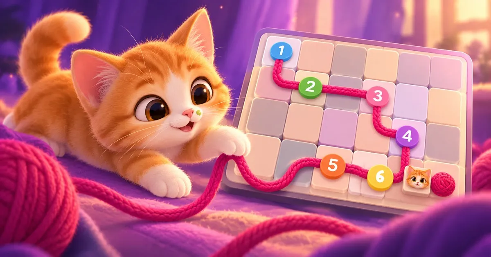
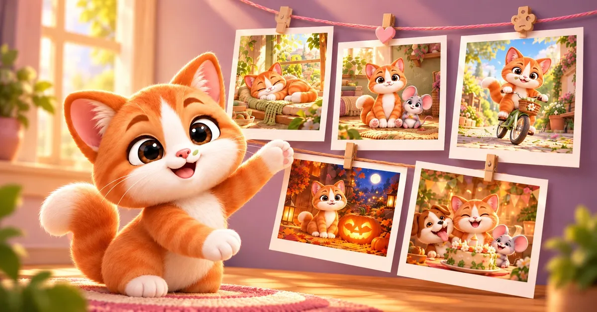

Zipstache
One line. One kitten. Draw Pistache's walk through every tile and get his bowl back.
Get it on Google Play Free on Android · English, Français, Português (Brasil)

This is Pistache. Ginger kitten, little green spot on his cheek, new in a little house. Biscotte the mouse lived there first, and she has hidden his bowls. You draw his walk with one finger to find them.
The rules fit on a napkin:
- start from Pistache,
- visit every tile exactly once,
- reach the bowls in order, 1, 2, 3…
- and end on the last bowl.
You'll get it in ten seconds. You'll still be thinking about it at dinner. Every puzzle has exactly one solution, and logic always gets you there — no luck, no timer that punishes you, no lives to lose.
What's inside
- 185+ walks across seven rooms of the house, from the garden to the library, each room bringing one new idea: rooms, tunnels, hidden bowls, clocks, and Biscotte herself running across the board.
- A new walk every day, the same for everyone, and a weekly five-walk challenge from Biscotte.
- Three fish per walk: one for finishing, one for speed, one for a perfect run with no going back.
- Pistache's photo wall: win snapshots of his life in the house, frame them, and dress your board in seasonal themes.
- Golden doors: an optional, harder trial at the end of each chapter, for those who want more.

En français — trace la balade de Pistache sur chaque case : pars de Pistache, passe par toutes les cases une seule fois, mange dans les gamelles dans l'ordre et termine sur la dernière. Plus de 185 balades, une nouvelle chaque jour, une seule solution, jamais de hasard. Gratuit sur Android.
Em português — trace o passeio do Pistache por todas as casinhas: comece no Pistache, passe por cada casinha uma vez só, visite as tigelas em ordem e termine na última. Mais de 185 passeios, um novo todo dia, uma única solução. Grátis no Android.